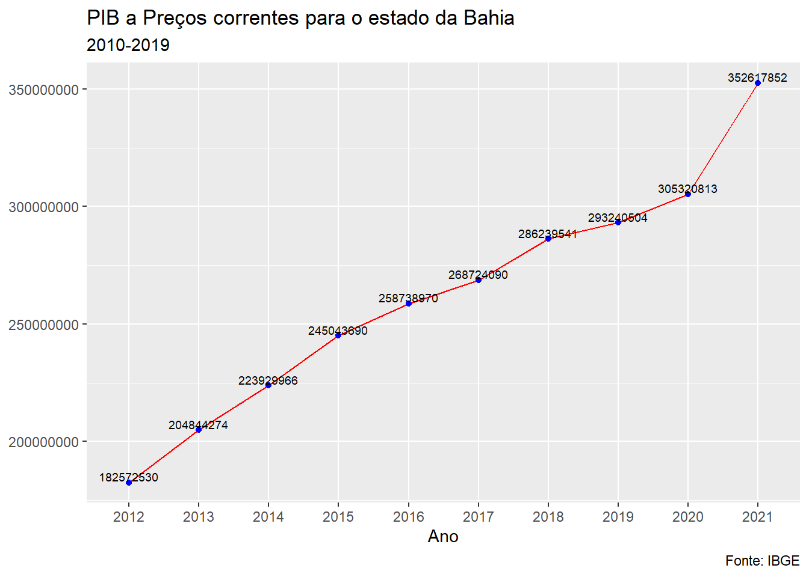

Code
if(!require(sidrar)){install.packages("sidrar")};library(sidrar)
# pacote utilizado para manipular os dados
if(!require(tidyverse)){install.packages("tidyverse")};library(tidyverse)
options(scipen = 999)Interface R para a API do SIDRA
Wellington Santos Souza
Sunday, 11 February 2024
Este artigo foi reescrito em Domingo, 11 de Fevereiro de 2024.
Esse tutorial tem como objetivo mostar como podemos acessar de forma fácil os dados disponíveis no SIDRA com o auxílio da linguagem estatística R. Bem como, mostrar alguns exemplos apresentando tabelas e gráficos.
O SIDRA permite consultar informações de todos os indicadores econômicos conjunturais (como os de trabalho e rendimento, inflação, indústria, comércio, serviços, agropecuária e o PIB) e suas séries históricas. Também dá acesso aos resultados de quase todas as pesquisas estruturais do IBGE, inclusive o Censo Demográfico, a Pesquisa Nacional por Amostra de Domicílios (PNAD), a Pesquisa de Orçamentos Familiares (POF), a Pesquisa Nacional de Saúde (PNS) e as pesquisas econômicas anuais.
O acesso ao website do SIDRA é feito pelo endereço http://sidra.ibge.gov.br. A aplicação também dispõe de uma API (Interface de Programação de Aplicação), que permite a extração dos dados utilizando programas e aplicativos web, pelo endereço http://api.sidra.ibge.gov.br.
Fonte: Agência IBGE
Os dados disponíveis no SIDRA podem ser acessado com o axílio da linguagem estatística R, com o auxílio do pacote sidrar.
O pacote R “sidrar” busca fornecer acesso direto aos dados do SIDRA - Sistema IBGE de Recuperação Automática - dentro do ambiente R de forma fácil e flexível.
Para instalar e carregar a versão disponível no CRAN:
Obter tabelas do SIDRA
Listando todos os parâmetros de uma tabela do SIDRA
Pesquise nas tabelas do SIDRA com termo(s) específicos
Vamos supor que queremos o Produto Interno Bruto a preços correntes (Mil Reais) para o estado da Bahia nos últimos 10 anos.
Para isso basta executar:
Gráfico com o valor do PIB a Preços correntes para o estado da Bahia
pib %>%
ggplot(mapping = aes(x=Ano,y=Valor, group = 1))+
geom_line(color = "red")+
geom_point(color = "blue")+
labs(title = "PIB a Preços correntes para o estado da Bahia",
subtitle = "2010-2019",
x="Ano",
y=NULL,
caption = "Fonte: IBGE")+
geom_text(aes(x = Ano, y = Valor, label = paste0(Valor)),
vjust = -0.15, size = 2.5)+
theme(plot.title = element_text(size=12),axis.text.x= element_text(size=12),
axis.text.y= element_text(size=8), axis.title=element_text(size=6))+
theme_grey()
Utililzando a API da tabela para obter as mesmas informações
Listando todos os parâmetros da Tabela 5938: Produto interno bruto a preços correntes, impostos, líquidos de subsídios, sobre produtos a preços correntes e valor adicionado bruto a preços correntes total e por atividade econômica, e respectivas participações - Referência 2010.
$table
[1] "Tabela 5938: Produto interno bruto a preços correntes, impostos, líquidos de subsídios, sobre produtos a preços correntes e valor adicionado bruto a preços correntes total e por atividade econômica, e respectivas participações - Referência 2010"
$period
[1] "2002, 2003, 2004, 2005, 2006, 2007, 2008, 2009, 2010, 2011, 2012, 2013, 2014, 2015, 2016, 2017, 2018, 2019, 2020, 2021"
$variable
cod
1 37
2 553
3 552
4 497
5 530
6 496
7 543
8 571
9 570
10 545
11 551
12 544
13 498
14 555
15 554
16 500
17 546
18 499
19 513
20 516
21 557
22 556
23 515
24 547
25 514
26 517
27 520
28 559
29 558
30 519
31 548
32 518
33 6575
34 6574
35 6571
36 6570
37 6572
38 6569
39 6573
40 525
41 528
42 563
43 562
44 527
45 550
46 526
desc
1 Produto Interno Bruto a preços correntes (Mil Reais)
2 Participação do produto interno bruto a preços correntes no produto interno bruto a preços correntes da microrregião geográfica (%)
3 Participação do produto interno bruto a preços correntes no produto interno bruto a preços correntes da mesorregião geográfica (%)
4 Participação do produto interno bruto a preços correntes no produto interno bruto a preços correntes da unidade da federação (%)
5 Participação do produto interno bruto a preços correntes no produto interno bruto a preços correntes da grande região (%)
6 Participação do produto interno bruto a preços correntes no produto interno bruto a preços correntes do Brasil (%)
7 Impostos, líquidos de subsídios, sobre produtos a preços correntes (Mil Reais)
8 Participação dos impostos, líquidos de subsídios, sobre produtos a preços correntes nos impostos, líquidos de subsídios, sobre produtos a preços correntes da microrregião geográfica (%)
9 Participação dos impostos, líquidos de subsídios, sobre produtos a preços correntes nos impostos, líquidos de subsídios, sobre produtos a preços correntes da mesorregião geográfica (%)
10 Participação dos impostos, líquidos de subsídios, sobre produtos a preços correntes nos impostos, líquidos de subsídios, sobre produtos a preços correntes da unidade da federação (%)
11 Participação dos impostos, líquidos de subsídios, sobre produtos a preços correntes nos impostos, líquidos de subsídios, sobre produtos a preços correntes da grande região (%)
12 Participação dos impostos, líquidos de subsídios, sobre produtos a preços correntes nos impostos, líquidos de subsídios, sobre produtos a preços correntes do Brasil (%)
13 Valor adicionado bruto a preços correntes total (Mil Reais)
14 Participação do valor adicionado bruto a preços correntes total no valor adicionado bruto a preços correntes total da microrregião geográfica (%)
15 Participação do valor adicionado bruto a preços correntes total no valor adicionado bruto a preços correntes total da mesorregião geográfica (%)
16 Participação do valor adicionado bruto a preços correntes total no valor adicionado bruto a preços correntes total da unidade da federação (%)
17 Participação do valor adicionado bruto a preços correntes total no valor adicionado bruto a preços correntes total da grande região (%)
18 Participação do valor adicionado bruto a preços correntes total no valor adicionado bruto a preços correntes total do Brasil (%)
19 Valor adicionado bruto a preços correntes da agropecuária (Mil Reais)
20 Participação do valor adicionado bruto a preços correntes da agropecuária no valor adicionado bruto a preços correntes total (%)
21 Participação do valor adicionado bruto a preços correntes da agropecuária no valor adicionado bruto a preços correntes da agropecuária da microrregião geográfica (%)
22 Participação do valor adicionado bruto a preços correntes da agropecuária no valor adicionado bruto a preços correntes da agropecuária da mesorregião geográfica (%)
23 Participação do valor adicionado bruto a preços correntes da agropecuária no valor adicionado bruto a preços correntes da agropecuária da unidade da federação (%)
24 Participação do valor adicionado bruto a preços correntes da agropecuária no valor adicionado bruto a preços correntes da agropecuária da grande região (%)
25 Participação do valor adicionado bruto a preços correntes da agropecuária no valor adicionado bruto a preços correntes da agropecuária do Brasil (%)
26 Valor adicionado bruto a preços correntes da indústria (Mil Reais)
27 Participação do valor adicionado bruto a preços correntes da indústria no valor adicionado bruto a preços correntes total (%)
28 Participação do valor adicionado bruto a preços correntes da indústria no valor adicionado bruto a preços correntes da indústria da microrregião geográfica (%)
29 Participação do valor adicionado bruto a preços correntes da indústria no valor adicionado bruto a preços correntes da indústria da mesorregião geográfica (%)
30 Participação do valor adicionado bruto a preços correntes da indústria no valor adicionado bruto a preços correntes da indústria da unidade da federação (%)
31 Participação do valor adicionado bruto a preços correntes da indústria no valor adicionado bruto a preços correntes da indústria da grande região (%)
32 Participação do valor adicionado bruto a preços correntes da indústria no valor adicionado bruto a preços correntes da indústria do Brasil (%)
33 Valor adicionado bruto a preços correntes dos serviços, exclusive administração, defesa, educação e saúde públicas e seguridade social (Mil Reais)
34 Participação do valor adicionado bruto a preços correntes dos serviços, exclusive administração, defesa, educação e saúde públicas e seguridade social, no valor adicionado bruto a preços correntes total (%)
35 Participação do valor adicionado bruto a preços correntes dos serviços, exclusive administração, defesa, educação e saúde públicas e seguridade social, no valor adicionado bruto a preços correntes dos serviços, exclusive administração, defesa, educação e saúde públicas e seguridade social, da microrregião geográfica (%)
36 Participação do valor adicionado bruto a preços correntes dos serviços, exclusive administração, defesa, educação e saúde públicas e seguridade social, no valor adicionado bruto a preços correntes dos serviços, exclusive administração, defesa, educação e saúde públicas e seguridade social, da mesorregião geográfica (%)
37 Participação do valor adicionado bruto a preços correntes dos serviços, exclusive administração, defesa, educação e saúde públicas e seguridade social, no valor adicionado bruto a preços correntes dos serviços, exclusive administração, defesa, educação e saúde públicas e seguridade social, da unidade da federação (%)
38 Participação do valor adicionado bruto a preços correntes dos serviços, exclusive administração, defesa, educação e saúde públicas e seguridade social, no valor adicionado bruto a preços correntes dos serviços, exclusive administração, defesa, educação e saúde públicas e seguridade social, da grande região (%)
39 Participação do valor adicionado bruto a preços correntes dos serviços, exclusive administração, defesa, educação e saúde públicas e seguridade social, no valor adicionado bruto a preços correntes dos serviços, exclusive administração, defesa, educação e saúde públicas e seguridade social, do Brasil (%)
40 Valor adicionado bruto a preços correntes da administração, defesa, educação e saúde públicas e seguridade social (Mil Reais)
41 Participação do valor adicionado bruto a preços correntes da administração, defesa, educação e saúde públicas e seguridade social no valor adicionado bruto a preços correntes total (%)
42 Participação do valor adicionado bruto a preços correntes da administração, defesa, educação e saúde públicas e seguridade social no valor adicionado bruto a preços correntes da administração, defesa, educação e saúde públicas e seguridade social da microrregião geográfic (%)
43 Participação do valor adicionado bruto a preços correntes da administração, defesa, educação e saúde públicas e seguridade social no valor adicionado bruto a preços correntes da administração, defesa, educação e saúde públicas e seguridade social da mesorregião geográfica (%)
44 Participação do valor adicionado bruto a preços correntes da administração, defesa, educação e saúde públicas e seguridade social no valor adicionado bruto a preços correntes da administração, defesa, educação e saúde públicas e seguridade social da unidade da federação (%)
45 Participação do valor adicionado bruto a preços correntes da administração, defesa, educação e saúde públicas e seguridade social no valor adicionado bruto a preços correntes da administração, defesa, educação e saúde públicas e seguridade social da grande região (%)
46 Participação do valor adicionado bruto a preços correntes da administração, defesa, educação e saúde públicas e seguridade social no valor adicionado bruto a preços correntes da administração, defesa, educação e saúde públicas e seguridade social do Brasil (%)
$classific_category
NULL
$geo
cod desc
1 Brazil Brasil (1)
2 Region Grande Região (5)
3 State Unidade da Federação (27)
4 City Município (5.570)
5 MesoRegion Mesorregião Geográfica (137)
6 MicroRegion Microrregião Geográfica (558)---
title: "Acessando dados disponíveis no SIDRA IBGE com o pacote sidrar"
subtitle: "Interface R para a API do SIDRA"
description: "O pacote R sidrar busca fornecer acesso direto aos dados do SIDRA - Sistema IBGE de Recuperação Automática - dentro do ambiente R de forma fácil e flexível."
author: "Wellington Santos Souza"
date: "2024-02-11"
format:
html:
code-fold: true
code-copy: true
code-tools: true
categories: [webascraping, r, sidra, ibge]
open-graph:
description: "SIDRA - IBGE"
image: ../images/01.sidrar/sidra.png
twitter-card:
description: "SIDRA - IBGE"
image: ../images/01.sidrar/sidra.png
---
*Este artigo foi reescrito em Domingo, 11 de Fevereiro de 2024.*
{fig-alt="SIDRAr" fig-title="Acessando dados disponíveis no SIDRA IBGE com o pacote sidrar" }
## Introdução
Esse tutorial tem como objetivo mostar como podemos acessar de forma fácil os dados disponíveis no **SIDRA** com o auxílio da linguagem estatística R. Bem como, mostrar alguns exemplos apresentando tabelas e gráficos.
## SIDRA
O SIDRA permite consultar informações de todos os indicadores econômicos conjunturais (como os de trabalho e rendimento, inflação, indústria, comércio, serviços, agropecuária e o PIB) e suas séries históricas. Também dá acesso aos resultados de quase todas as pesquisas estruturais do IBGE, inclusive o Censo Demográfico, a Pesquisa Nacional por Amostra de Domicílios (PNAD), a Pesquisa de Orçamentos Familiares (POF), a Pesquisa Nacional de Saúde (PNS) e as pesquisas econômicas anuais.
O acesso ao website do SIDRA é feito pelo endereço [**http://sidra.ibge.gov.br**](http://sidra.ibge.gov.br/). A aplicação também dispõe de uma API (Interface de Programação de Aplicação), que permite a extração dos dados utilizando programas e aplicativos web, pelo endereço [**http://api.sidra.ibge.gov.br**](http://api.sidra.ibge.gov.br/).
Fonte: [Agência IBGE](https://agenciadenoticias.ibge.gov.br/agencia-sala-de-imprensa/2013-agencia-de-noticias/releases/9481-novo-sidra-permite-consultar-facilmente-dados-de-estudos-e-pesquisas-do-ibge-tambem-em-dispositivos-moveis#:~:text=O%20SIDRA%20permite%20consultar%20informa%C3%A7%C3%B5es,PIB)
Os dados disponíveis no SIDRA podem ser acessado com o axílio da linguagem estatística R, com o auxílio do pacote **sidrar.**
## sidrar
O pacote R "sidrar" busca fornecer acesso direto aos dados do SIDRA - Sistema IBGE de Recuperação Automática - dentro do ambiente R de forma fácil e flexível.
### Instalando e carregando o pacote sidrar
Para instalar e carregar a versão disponível no CRAN:
```{r}
#| message: false
if(!require(sidrar)){install.packages("sidrar")};library(sidrar)
# pacote utilizado para manipular os dados
if(!require(tidyverse)){install.packages("tidyverse")};library(tidyverse)
options(scipen = 999)
```
### Funções
Obter tabelas do SIDRA
```{r}
# ?get_sidra
```
Listando todos os parâmetros de uma tabela do SIDRA
```{r}
# ?info_sidra
```
Pesquise nas tabelas do SIDRA com termo(s) específicos
```{r}
# ?search_sidra
```
### Exemplos
#### get_sidra
Vamos supor que queremos o Produto Interno Bruto a preços correntes (Mil Reais) para o estado da Bahia nos últimos 10 anos.
Para isso basta executar:
```{r}
#| message: false
pib <- get_sidra(x = 5938,
period = c("last" = 10),
variable = 37,
geo = "State",
geo.filter = 29,
header = T,
format = 3)
```
Gráfico com o valor do PIB a Preços correntes para o estado da Bahia
```{r}
pib %>%
ggplot(mapping = aes(x=Ano,y=Valor, group = 1))+
geom_line(color = "red")+
geom_point(color = "blue")+
labs(title = "PIB a Preços correntes para o estado da Bahia",
subtitle = "2010-2019",
x="Ano",
y=NULL,
caption = "Fonte: IBGE")+
geom_text(aes(x = Ano, y = Valor, label = paste0(Valor)),
vjust = -0.15, size = 2.5)+
theme(plot.title = element_text(size=12),axis.text.x= element_text(size=12),
axis.text.y= element_text(size=8), axis.title=element_text(size=6))+
theme_grey()
```
Utililzando a API da tabela para obter as mesmas informações
```{r}
# get_sidra(api = "")
```
#### info_sidra
Listando todos os parâmetros da Tabela 5938: Produto interno bruto a preços correntes, impostos, líquidos de subsídios, sobre produtos a preços correntes e valor adicionado bruto a preços correntes total e por atividade econômica, e respectivas participações - Referência 2010.
```{r}
info_sidra(5938)
```